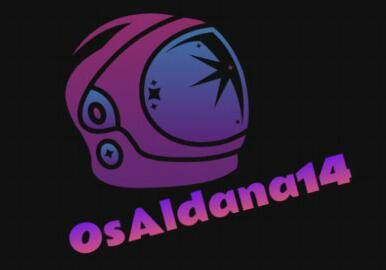
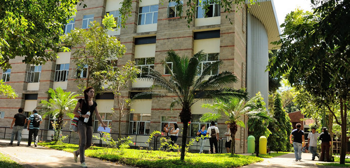
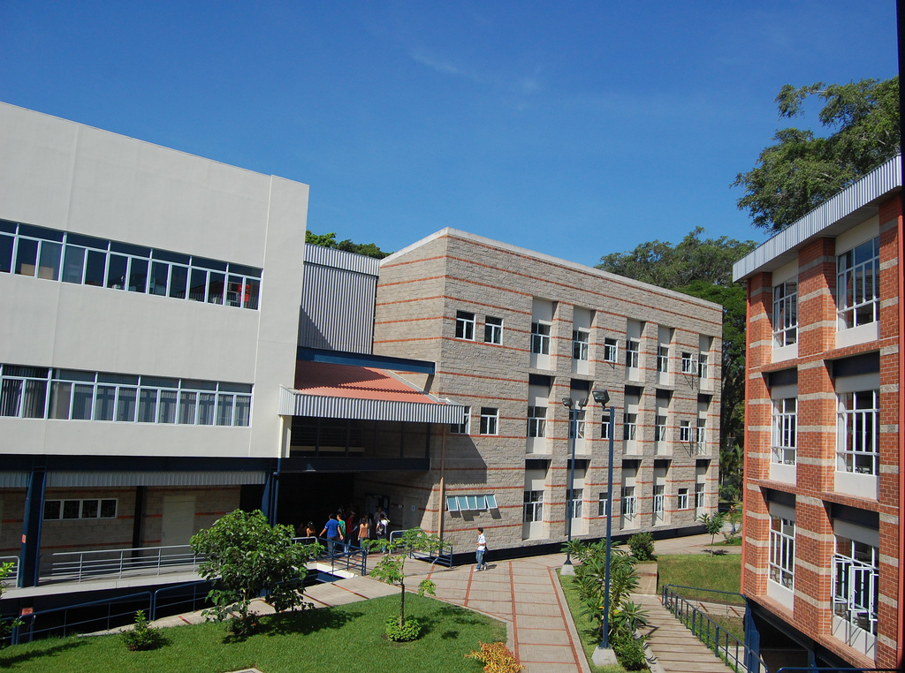

Bienvenido a mi resumen de "Una Vision Perversa"
Esta es un poco mi version de como vivi esta bonita experiencia, muchas gracias a Carlos, Nestor y los demas involucrados en realizar esta actividad

Begins

Todo estaba tan tranquilo en clase de Bases de Datos, faltaban unos 15 min para las 5:10, y Carlos dijo que nos iba a presentar un video,
lo cual pense que seria con respecto a la clase y pudimos ver el primer video y me rei un poco, pense lo divertido que seria esta actividad.

O-O-O

Luego de resolver el primer Misterio nos dirigimos a las pistas que Ada nos dejo hacia el Polideportivo y encontramos el codigo cerca de las mesas de Ping-Pong
La verdad es que no fue muy complicado ya que encontramos a los instructores colocandolo, fue muy gracioso encontrarlos pegandolo

Minus monocromo

Estabamos en clase de Bases y en el mismo salon nos encontrabamos las 2 secciones porque Carlos iba a hacer una parte de la funcion
que nos pidio Ada porque no podiamos hacerlo y descubrimos la siguiente pista, teniamos que ir donde estaban pintando el mural, en ese
lugar se encontraba el siguiente qr.
Cumulonimbus

Ese dia no teniamos web pero Carlos nos habia pedido llegar a la clase para la siguiente pista y esa era que teniamos que ir afuera de las aulas B
y llego Nestor, luego de eso un dron se empezaba a ver desde el cielo y aunque les costo aterrizarlo, mi amigo Miguel fue el que saco el papel,
por eso es que en la foto me estoy riendo, porque el es bien nervioso! JAJA
Commit;

Aunque solo tenia una clase a las 7, me quede hasta las 5 a ver el evento final ya que me daba curiosidad y llegamos con mis amigos
unos 15 min antes y desde ese entonces estaba "Kurt" viendo hacia la pared (y quien sabe desde cuanto antes) asi como se ve en la foto,
me parecio muy buena actuacion del joven, aunque nuestra falta de seguir el rol hizo que fuera un momento gracioso su muerte.